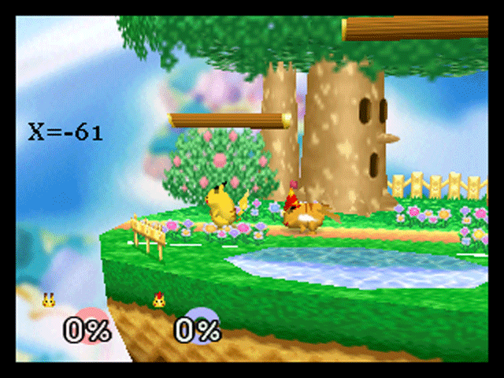
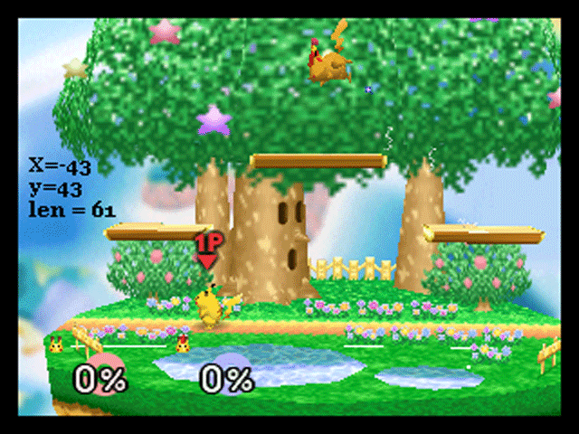
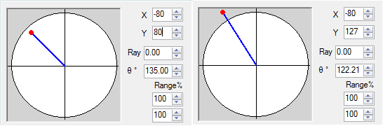

In addition to determining the direction of the up-b, your input decides the distance the up-b travels.
Here's a couple gifs to illustrate the point. Both are showing non-extended up-bs starting from the side plat:
 If you're paying attention, you might notice that in the second gif, I didn't show results for all the way to X=-80, Y=80. The reason for this is that for pika's up-b, unlike for DI, what matters is the distance from the center of the joystick, not the value of each coordinate. The maximum up-b distance is always 80 units away from the center, in a circle.
If that didn't make sense, here's a graph:

The red area represents the area for an up-b input. Any input on or before the blue circle will result in an up-b straight up (so any input at x=60 y=0, or x=42 y=42, etc). Any input further than 80 units from the center will cause the up-b to be max range.
That the up-b uses a circle instead of a square like DI is good news for OG users, since even worn OGs can usually reach 80 units on each cardinal and x=57 y=57 on each diagonal, so using hori is no advantage here.
There's one last weird quirk with the way SSB truncates the inputs. You might expect inputs past 80 to not increase up-b distance, but still have their angles preserved. This is not quite how it works. Instead, X and Y values greater than 80 are cut off BEFORE the angle is calculated. To understand what this means, here are a few pairs of inputs that you might expect to produce different up-b angles, but don't:

Seems potentially annoying for users of high-range controllers, not sure why they designed it that way.